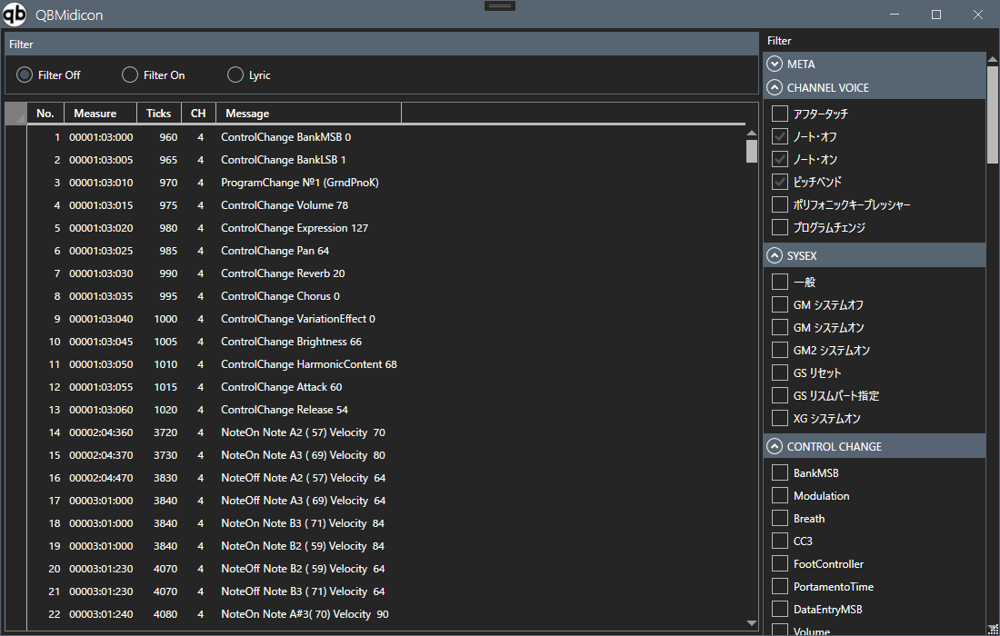

This window displays a list of individual MIDI events in the
track, which can be displayed by selecting the relevant line in the Source or Converted track list and using the right-click menu.

Screen configuration
Event list item
| Item | Description |
|---|---|
| No. | Event serial number |
| Measure | Event position (measures: beats: ticks) |
| Ticks | Event position (absolute value in ticks) |
| CH | MIDI channel |
| Message | Event content (e.g. ControlChange BankMSB 0, NoteOn Note A2 (57) Velocity 70 etc.) |